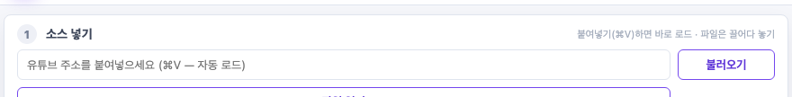
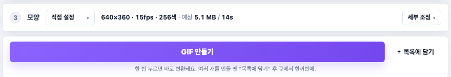

Stone Kids Lab · 사용 가이드
YTgif
쓰는 법은 셋 — 넣고, 자르고, 만든다.
유튜브 링크를 붙여넣고, 타임라인에서 원하는 구간을 잡고, 버튼 하나로 GIF로 뽑습니다. 위에서 아래로 ① 소스 → ② 구간 → ③ 모양 → 만들기, 한 화면에서 끝납니다.
← YTgif 소개로 돌아가기유튜브 링크를 붙여넣고, 타임라인에서 원하는 구간을 잡고, 버튼 하나로 GIF로 뽑습니다. 위에서 아래로 ① 소스 → ② 구간 → ③ 모양 → 만들기, 한 화면에서 끝납니다.
← YTgif 소개로 돌아가기
한 화면에 다 들어옵니다 — 스크롤 없이 ① 소스 · ② 구간 · ③ 모양 · 만들기
xattr -dr com.apple.quarantine /Applications/YTgif.app
변환 엔진(ffmpeg)과 유튜브 다운로더(yt-dlp)는 앱에 내장되어 있어 따로 설치할 필요가 없습니다. 단, macOS 기본 명령어 도구(python3)는 필요합니다 — 대부분의 맥에 이미 있고, 없으면 첫 실행 때 설치 안내가 한 번 뜹니다.

유튜브 주소를 입력칸에 붙여넣기(⌘V)만 하면 바로 로드됩니다. 불러오기 버튼을 누를 필요도 없습니다. 손에 있는 영상 파일은 앱 화면 어디에든 끌어다 놓으면 전면 오버레이로 받아주고, "파일 열기"로 직접 골라도 됩니다.

트랙에 시간 눈금이 깔려 있고, IN/OUT 핸들마다 현재 시각이 버블로 붙어 어디를 잡았는지 한눈에 보입니다. 재생하다가 "시작/끝" 버튼으로 현재 위치를 찍거나, 핸들을 직접 끌면 됩니다. 1시간짜리 영상에서 2~3초를 뽑을 땐 "구간 확대"로 줌인 — 위쪽 미니맵이 전체 위치를, 아래 확대된 트랙이 정밀 조작을 맡습니다.

프리셋(Instagram·Discord·Telegram·카카오·직접 설정)을 고르면 해상도·FPS·색상이 한 번에 맞춰집니다. 예상 용량·변환 시간이 바로 옆에 뜨고, 더 손보고 싶으면 "세부 조정"에서 해상도·색상 수·디더링까지 만집니다. 그리고 "GIF 만들기" 한 번이면 추가와 변환이 끝 — 결과는 큐에서 확인합니다.
마우스 없이도 빠르게. 타임라인·플레이어에서 바로 통합니다.
여기 있는 도구들은 더 좋은 영상을 만들려다 직접 만든 결과물입니다. 촬영·편집·라이브 중계 등 영상 제작이 필요하시면 편하게 연락 주세요.